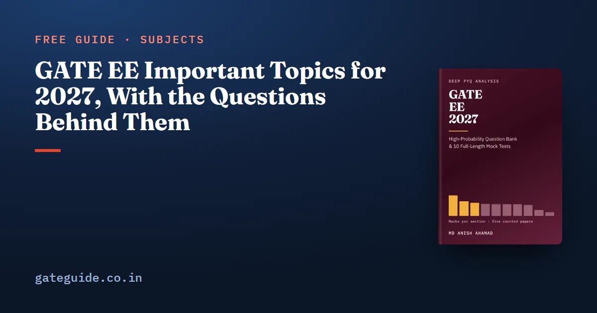

GATE EE Important Topics for 2027, With the Questions Behind Them

The important topics for GATE Electrical Engineering 2027 are the ones the papers keep using. Counted question by question across the five most recent EE papers, 2022 to 2026, ten topic groups appeared in every one of them, and together they carried 134 of the 425 technical marks.
In this guide
This guide names those ten, topic by topic, with the questions that asked them, then the groups that appeared in four papers, and finally the syllabus topics no paper has touched.
Key takeaways
- Ten topic groups appeared in all five papers. They are where preparation starts and the last thing to cut.
- Seven of the ten are in Engineering Mathematics, Power Systems and Power Electronics, the three largest sections on the mean.
- Some patterns only show when groups are read together: Bode or Nyquist was in every paper, and so was digital logic.
- Several named topics have never been asked, active filters among them. The one word the 2027 syllabus corrected, Butterworth, sits in that group.
- Five papers show patterns, not trends. A topic in all five is a strong signal, not a promise.
What "important" means here
Two countable things: how many of the five papers contain the topic group, and how many marks it carried in total. The first matters more. A group in all five papers keeps coming back; a group with the same marks from two papers had a good year or two.
The evidence is usable for 2027 because the syllabus has not moved. Compared phrase by phrase with 2026, the 2027 EE syllabus adds, removes and rewords nothing; the only change is the spelling of "Butterworth". Citations below give the year and the paper's own question number, in the form GATE 2025, Q.53.
The ten topic groups in all five papers
| Topic group | Section | Questions | Marks |
|---|---|---|---|
| Calculus, mostly vector calculus | Engineering Mathematics | 15 | 28 |
| Linear algebra | Engineering Mathematics | 15 | 20 |
| Three-phase induction machines | Electrical Machines | 11 | 17 |
| Operational amplifiers | Analog and Digital Electronics | 8 | 14 |
| Probability and statistics | Engineering Mathematics | 8 | 12 |
| Transient response of DC and AC networks | Electric Circuits | 7 | 11 |
| DC to DC converters | Power Electronics | 6 | 10 |
| Economic load dispatch | Power Systems | 5 | 8 |
| Symmetrical components and fault analysis | Power Systems | 5 | 7 |
| Device characteristics and gating | Power Electronics | 6 | 7 |
Topic by topic
Vector calculus and linear algebra
Nine of the fifteen calculus questions, 17 of its 28 marks, are vector calculus. Directional derivatives came in four consecutive papers: GATE 2022, Q.50; GATE 2023, Q.65; GATE 2024, Q.36; and GATE 2025, Q.53. Green's theorem was asked in GATE 2022, Q.51 and GATE 2023, Q.62, and the divergence theorem in GATE 2022, Q.52 and GATE 2026, Q.32.
Linear algebra rests on four ideas: eigenvalue algebra (GATE 2022, Q.40; GATE 2024, Q.32), Cayley–Hamilton (GATE 2022, Q.42; GATE 2025, Q.14), the solution count of (GATE 2025, Q.13; GATE 2026, Q.56) and special matrices. It carried 8 marks in 2026 alone. Know that the trace is , the determinant is , and the eigenvalues of are .
Probability as random variables
Every paper asked one or more questions, usually about a density, an expectation or a function of a random variable: a normalising constant in GATE 2022, Q.54, a conditional expectation in GATE 2025, Q.15, the density of in GATE 2025, Q.36. The Poisson, binomial and normal distributions, all named in the syllabus, have not been asked as calculations of their own.
First-order transients
Every paper set a switched RC or RL question: GATE 2022, Q.31; GATE 2023, Q.29; GATE 2024, Q.14; GATE 2025, Q.57; GATE 2026, Q.43, among others. Six of the seven are first-order, and all of them yield to one relation:
The three-phase induction machine
The one certainty in Electrical Machines: 17 of the section's 42 marks, never fewer than 3 in a year. Speed control (GATE 2023, Q.48; GATE 2025, Q.45; GATE 2026, Q.59) and starting (GATE 2022, Q.65; GATE 2024, Q.54) carry most of it. No other machine appeared in more than three papers.
Economic load dispatch and faults
Dispatch was one question in every paper, from GATE 2022, Q.43 to GATE 2026, Q.58, which added transmission losses. The equal incremental cost rule carries it; GATE 2025, Q.64 turned on a generator limit, where that rule stops applying. Symmetrical components and faults were also in every paper, split between the transformation itself (GATE 2022, Q.15; GATE 2024, Q.46; GATE 2026, Q.19) and a fault calculation (GATE 2023, Q.60; GATE 2025, Q.33).
Op-amps
Fourteen marks over eight questions, a third of its section. Three kinds recur: ideal-circuit analysis (GATE 2025, Q.56), non-ideal behaviour such as finite gain or common-mode rejection (GATE 2024, Q.61; GATE 2026, Q.37), and saturation, as with the integrator driven by DC in GATE 2022, Q.16.
DC-DC converters and power devices
Every converter question is steady-state waveform reasoning: volt-second balance, charge balance, power balance. Three of the six gave a current waveform and asked for a component or the source, GATE 2022, Q.61, GATE 2025, Q.60 and GATE 2026, Q.48, the last in discontinuous conduction. Device questions were mostly one-mark facts about speed and conduction, such as GATE 2024, Q.27 on the fastest switch.
The groups in four of five papers
| Topic group | Marks | Missing year |
|---|---|---|
| Linear time-invariant systems and convolution | 18 | 2026 |
| Load flow and the bus admittance matrix | 9 | 2022 |
| Power system stability, equal area criterion | 8 | 2026 |
| Bode plots | 8 | 2025 |
| Transistor amplifiers | 8 | 2026 |
| Inverters and sinusoidal PWM | 8 | 2023 |
| Differential equations | 8 | 2022 |
| Fourier series | 7 | 2024 |
| Transmission lines | 7 | 2025 |
| Fourier transform applications | 6 | 2026 |
| Diode circuits | 6 | 2025 |
| Control transient and steady-state analysis | 6 | 2023 |
Signals and Systems is the warning in this table. Linear time-invariant systems carried 18 marks in twelve questions from 2022 to 2025 and none in 2026, when the whole section fell to 4 marks. Stability did the same: 2 marks in each of 2022 to 2025, then none. One paper's absence is not a pattern.
Patterns that appear only when groups are joined
Frequency response. Neither Bode plots nor the Nyquist criterion appeared in all five papers, but one or the other did, every year: GATE 2022, Q.17 and GATE 2022, Q.38; GATE 2023, Q.13 and GATE 2023, Q.36; GATE 2024, Q.58 and GATE 2024, Q.59; GATE 2025, Q.23; GATE 2026, Q.29. That is the one thing in Control Systems you can plan on.
Digital logic. Combinational and sequential logic together gave 2, 2, 3, 2 and 4 marks from 2022 to 2026. Every sequential question was from 2022 to 2024 and every combinational one from 2024 to 2026, which five papers cannot explain, so prepare both.
These joins matter at the desk: prepare frequency response as one topic and digital logic as one topic, rather than betting on either half.
Named in the syllabus, never examined
No counted question from 2022 to 2026 was set on these, though the 2027 syllabus names each:
- Analog and Digital Electronics: oscillators and feedback amplifiers, active filters (Sallen Key, Butterworth), VCOs and timers, Schmitt triggers and sample-and-hold.
- Power Systems: generation concepts, AC and DC transmission concepts, series and shunt compensation, insulators, per-unit quantities as a question of their own, circuit breakers.
- Measurements: digital voltmeters and multimeters, phase, time and frequency measurement, oscilloscopes.
- Others: magnetic circuits and inductance in Electromagnetic Fields, signal flow graphs in Control Systems, RMS and average values in Signals and Systems.
A zero across five papers is real evidence and weak evidence. Most of these are a single formula, so an hour each after the core is secure is cheap insurance. The GATE EE 2027 book gives each of them at least one practice question, alongside the topic groups above.
A study order that follows the evidence
- The ten five-paper groups first, starting with vector calculus and linear algebra, because Engineering Mathematics was the largest section in every paper.
- Then the four-paper groups, with Signals and Systems and Control Systems prepared side by side.
- Then the named-but-unexamined list, quickly.
- Practise in each section's format. Power Electronics and Electric Circuits lean on numerical answers, so rehearse with the on-screen calculator.
- Keep General Aptitude running all season. It is 15 marks in every paper; see the General Aptitude guide, and work back from the GATE 2027 exam dates.
The book prints every topic group for all ten technical sections with the question numbers behind each, and adds 914 questions with worked solutions: 264 in its subject chapters and 650 across 10 full mock tests. A free 37-page preview is on the book page.
Frequently asked questions
Which topics are most important for GATE EE 2027?
On the count of the 2022 to 2026 papers, ten topic groups appeared in all five papers, namely calculus (mostly vector calculus), linear algebra, probability, first-order transients, the three-phase induction machine, economic load dispatch, symmetrical components and faults, op-amps, DC-DC converters and power device characteristics. Together they carried 134 of the 425 technical marks.
Which Power Systems topics are asked every year in GATE EE?
Economic load dispatch and symmetrical components with fault analysis. Each appeared in all five counted papers, with one dispatch question in every paper from GATE 2022, Q.43 to GATE 2026, Q.58. Load flow, stability and transmission lines each appeared in four of the five, so they come next.
Is the induction motor important for GATE EE?
It is the most reliable topic in Electrical Machines. The three-phase induction machine appeared in all five counted papers, with eleven questions and 17 of the section's 42 marks, never fewer than 3 marks in a year. Speed control and starting carried most of it. No other machine appeared in more than three papers.
Are active filters and timers important for GATE EE 2027?
They are named in the syllabus, and no paper from 2022 to 2026 asked about them. The same is true of oscillators, Schmitt triggers, oscilloscopes, insulators and circuit breakers. A zero across five papers does not mean they will stay unexamined, so give each a short session after the core topics are secure.
Did the GATE EE syllabus change for 2027?
Only by one spelling. The 2027 document adds, removes and rewords no phrase compared with 2026. Butterwoth is corrected to Butterworth in Analog and Digital Electronics. Every topic in this guide is therefore named in the syllabus you will sit, and the past questions cited here remain valid practice.
Sources
- GATE 2027 official website (IIT Madras)
- GATE 2027 EE syllabus (IIT Madras)
- GATE past papers and answer keys archive (IIT Guwahati)
- GATE 2026 EE question paper (IIT Guwahati)
- GATE 2025 EE question paper (IIT Roorkee)
Dates, fees and the syllabus are set by the GATE 2027 organising institute and can change. Always confirm at gate2027.iitm.ac.in.